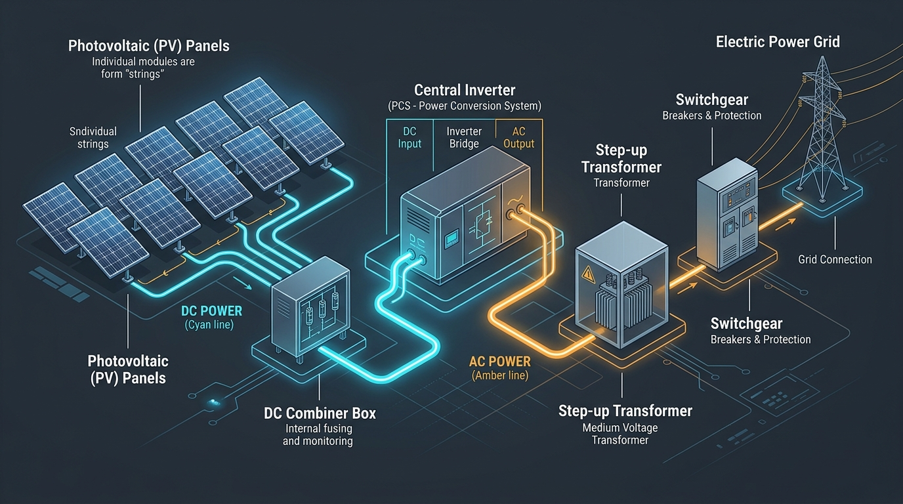
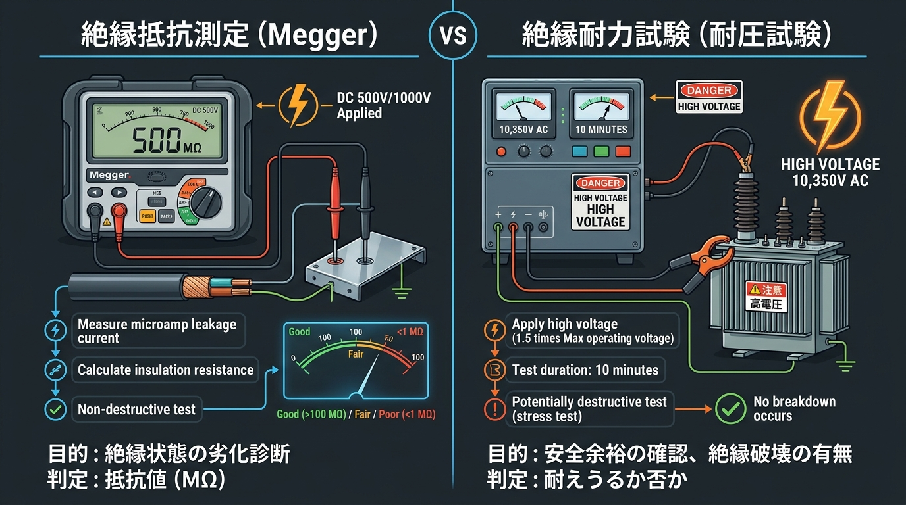
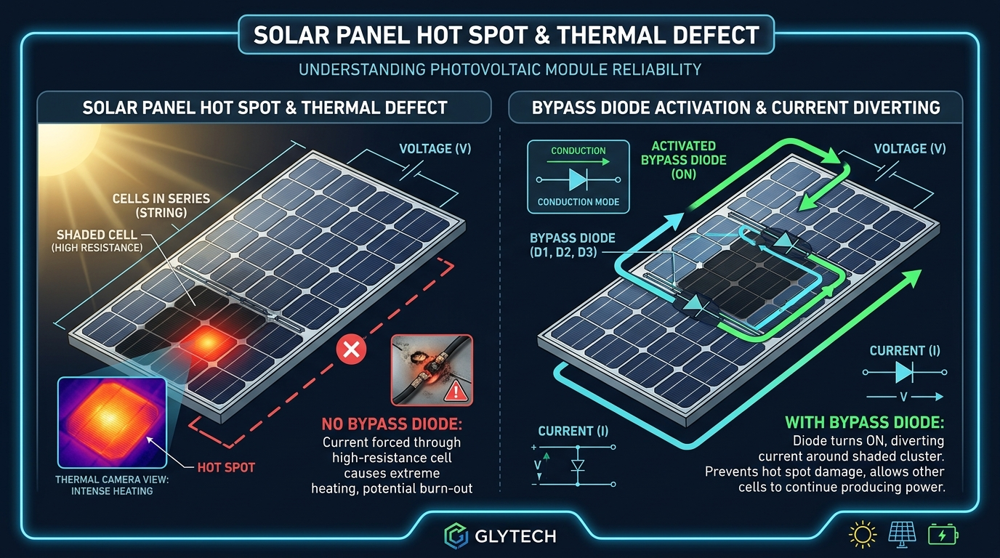
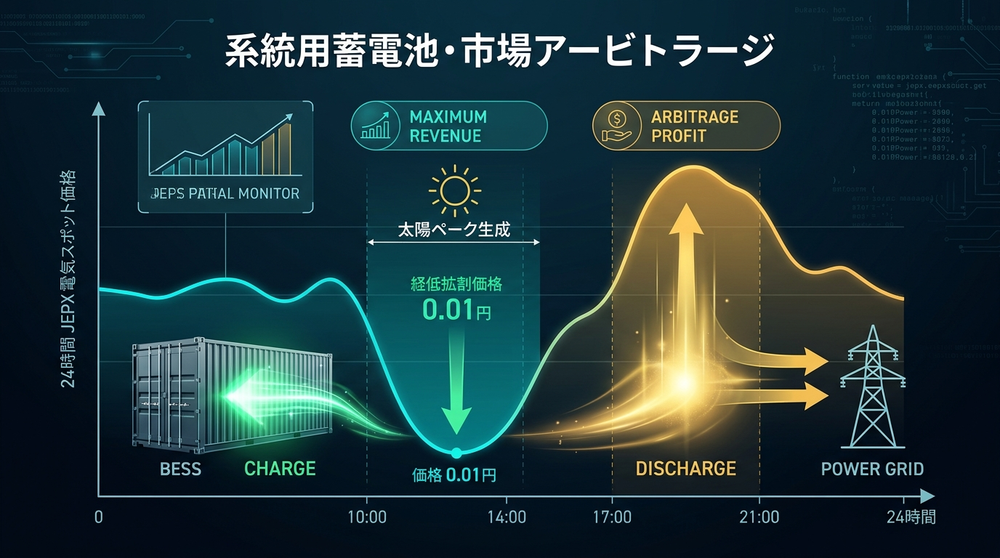
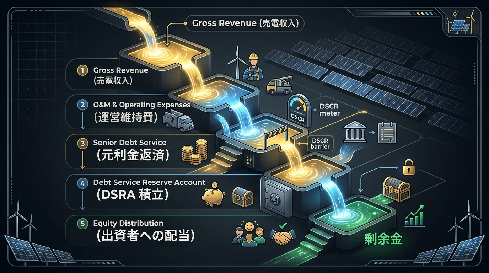

実務用語集（Glossary）
現場・技術・制度・ファイナンス・法務まで、太陽光アセットマネジメントで頻出する160以上の重要専門用語を体系的6ジャンルに分類。概念図解イラストとともに直感的に学習・即時検索できます。
全160件以上の用語を表示中
⚡ 電気設備・構成技術
26用語収録モジュールから接続箱、PCS（パワコン）、受変電キュービクル、保護継電器、特別高圧・高圧連系までの電気回路・設備保安の実務用語です。
概念図解：太陽光発電システムの全体電気構成フロー
図解で覚える電気設備
① 直流回路（DC）: ストリング ➔ 接続箱
モジュールを直列に繋ぎ電圧を上げた「ストリング」を、接続箱（集電盤）で並列に集約。開閉器や逆流防止素子を内蔵。
② 電力変換: PCS（パワーコンディショナ）
太陽電池の直流電力（DC）を商用交流電力（AC）に高効率変換。日射に追従するMPPT制御を常時実行。
③ 交流昇圧＆保護: 変圧器キュービクル ➔ 系統連系
変圧器（TR）で6.6kV（高圧）や22kV/66kV（特高）に昇圧。VCBや保護継電器で事故時に電力系統と瞬時遮断。
- PCS（パワーコンディショナ）Power Conditioning System電気設備
- 太陽電池の直流電力（DC）を電力系統と同じ周波数の交流電力（AC）に変換する中核装置。インバータ回路、系統連系保護装置、自律運転機能などを統合。
- MPPT（最大電力点追従）Maximum Power Point Tracking電気設備
- 日射強度や温度で刻々と変動する太陽電池の電流・電圧特性（I-V特性）において、出力電力（P＝V×I）が最大となる最適動作点（Pmax）を自動で追従・維持する制御。
- 過積載率（DC/AC比）DC/AC Ratio電気設備
- モジュール定格容量（DC）÷ PCS定格容量（AC）。120%〜180%の過積載設計により、朝夕や曇天時の発電量を底上げして総売電量を最大化する手法。
- ストリングPV String電気設備
- 太陽光モジュールを複数枚直列に配線接続した最小の発電回路単位。直列枚数によってストリング全体の開放電圧（Voc）および動作電圧（Vmp）が決まる。
- 接続箱（集電盤）Combiner Box / Junction Box電気設備
- アレイ上の複数ストリングの直流配線を並列にまとめてPCSへ送電する盤。直流断路器、ヒューズ、逆流防止ダイオード、サージ保護装置（SPD）を内蔵。
- キュービクル（受変電設備）High Voltage Cubicle電気設備
- 高圧（6.6kV）または特高で電力系統と連系するための受変電機器を一括収納した金属製キャビネット。変圧器、断路器、遮断器、計器用変成器、保護継電器を配置。
- 高圧連系High Voltage Interconnection電気設備
- 6.6kV配電線に連系する発電設備区分。原則として発電出力50kW以上2,000kW未満のメガソーラーが該当し、電気主任技術者の選任届出が必要。
- 特別高圧連系（特高）Extra High Voltage Interconnection電気設備
- 22kV、66kV、77kV以上の基幹送電線に連系する発電区分。原則2,000kW（2MW）以上が対象で、専用受電設備・専任の主任技術者・電気保安体制の構築が必須。
- 単独運転防止（単独運転検出）Anti-Islanding Protection電気設備
- 系統停電時に発電所が系統へ送電を継続（単独運転）すると感電や設備破壊を招くため、PCSに能動的・受動的方式で単独運転を瞬時に検知し停止させる保護機能。
- OVGR（地絡過電圧継電器）Ground Over Voltage Relay電気設備
- 系統側で1線地絡事故が発生した際に生じる零相電圧（Vo）を検出して遮断器を作動させる継電器。非接地系統の保護に不可欠。
- DGR（地絡方向継電器）Directional Ground Relay電気設備
- 零相電圧（Vo）と零相電流（Io）の位相差を判別し、地絡事故が「構内」で起きたのか「系統構外」で起きたのかを正確に識別して構内事故時のみ遮断する継電器。
- OCR（過電流継電器）Over Current Relay電気設備
- 回路に定格を超える過負荷電流や短絡電流（ショート）が流れたことを検出し、主遮断器（VCB等）に引き外しトリップ信号を送る継電器。
- 力率一定制御Constant Power Factor Control電気設備
- 太陽光発電の大量連系により受電点電圧が上昇して上限を逸脱するのを防ぐため、PCSから適度な遅れ無効電力を出力して受電点力率（95%等）を一定に保つ制御。
- FRT要件（系統擾乱耐性）Fault Ride Through電気設備
- 送電線の落雷などで瞬時電圧低下や周波数変動が生じた際、即座に系統から一斉脱落せず、一定時間運転を維持して系統の崩壊（ブラックアウト）を防ぐ性能要件。
- バイパスダイオードBypass Diode電気設備
- 落ち葉や影で発電しなくなったセル群を電気的に迂回（バイパス）させ、影セルが抵抗となって異常発熱するホットスポット現象やストリング全体の出力低下を防ぐダイオード。
- 開放電圧（Voc）Open Circuit Voltage電気設備
- 端子間に電流が流れていない状態の電圧。冬期の極寒環境下では温度係数によりVocが急上昇するため、PCSの最大許容入力電圧を超えないよう直列数を設計する。
- 短絡電流（Isc）Short Circuit Current電気設備
- 端子間をショートさせた時に流れる最大電流。日射強度にほぼ比例。ケーブル許容電流やヒューズ容量選定の基準値となる。
- 動作点（Vmp / Imp / Pmax）Maximum Power Voltage / Current電気設備
- 最大出力動作電圧（Vmp）と最大出力動作電流（Imp）。この積（Vmp×Imp）がモジュールの最大定格出力（Pmax）となる。
- 電気主任技術者Chief Electrical Engineer電気設備
- 電気事業法に基づき、事業用電気工作物の工事・維持・運用の保安を監督する国家資格者（電験一種・二種・三種）。自家用発電所設置者は選任または委託が義務。
- 保安規程Safety Regulations電気設備
- 設置者が電気工作物の保安のために自ら定め、経済産業大臣（産業保安監督部）に届出を行う規程。巡視点検の頻度、定期点検基準、緊急連絡体制などを規定。
- 自家用電気工作物Private Electrical Facilities電気設備
- 電気事業法上の重要区分。50kW以上の太陽電池発電所、または受電電圧600V超の高圧受電設備を有する発電所が該当し、法令上の保安義務が課される。
- 使用前自己確認制度Pre-commissioning Self-inspection電気設備
- 10kW以上500kW未満の太陽光発電所（小規模事業用電気工作物含む）において、使用開始前に技術基準適合性を自ら確認・記録・届出することが義務付けられた制度。
- 受電点（責任分界点）Point of Common Coupling (PCC)電気設備
- 一般送配電事業者の系統設備と発電事業者設備との財産・保安上の境界。通常は第一号柱の気中開閉器（PAS/SOG）の電源側接続端子となる。
- PAS / SOG開閉器Pole Air Switch / Storage Overcurrent Ground電気設備
- 受電点柱上に設置される高圧気中開閉器。構内事故時に系統への波及事故を遮断し、送電線全体の停電を防ぐ最後の砦。
- 変圧器（トランス / TR）Step-up Transformer電気設備
- PCSの出力電圧（例: AC380Vや480V）を送電・受電電圧（6.6kV、22kV、66kV）まで電磁誘導により昇圧する静止誘導機器。
- 真空遮断器（VCB）Vacuum Circuit Breaker電気設備
- 高圧電路の負荷電流を開閉し、事故時には継電器の指令により真空容器内の高い絶縁性能を利用して安全に大電流アークを遮断・消弧する遮断器。
📈 発電性能・データ分析
22用語収録PR（性能比）、比発電量、損失ツリー、温度補正、P50/P90予測、日射量測定と予実対比分析に関するアセットマネージャー必修の指標です。
- PR（性能比 / パフォーマンスレシオ）Performance Ratio発電性能
- 実発電量 ÷（定格DC容量 × 傾斜面日射量 ÷ 1kW/m²）。日射変動の影響を排除して設備の本来の健全度を評価する指標。正常稼働時の水準は78〜85%程度。
- 比発電量（kWh/kWp）Specific Yield発電性能
- 単位設備容量（1kWp）あたりの年間・月間発電量。発電所規模の大小に依存せず、立地ごとの日射条件や発電効率を横並びで比較する際に用いる指標。
- 設備利用率（Capacity Factor）Capacity Factor (CF)発電性能
- 実発電量 ÷（定格出力 × 年間8,760時間）。太陽光発電は夜間発電しないため年間平均14〜17%程度が標準値。DC設備容量基準とAC連系出力基準で値が異なる。
- 傾斜面日射量（POA）Plane of Array (POA) Irradiation発電性能
- 架台傾斜角度に設置されたモジュール受光面に直接入射する日射量。水平面日射量と異なり、PRの計算式分母に厳密に用いられる一次測定データ。
- 水平面全天日射量（GHI）Global Horizontal Irradiation発電性能
- 水平面が受ける直達日射と散乱日射の合計。気象庁やNEDOの観測データで広く用いられる標準日射指標。
- STC（標準試験条件）Standard Test Conditions発電性能
- 日射強度1,000W/m²、セル温度25℃、大気質量スペクトルAM1.5。カタログに記載されるモジュール定格出力（Wp）はこの厳格な試験条件下の測定値。
- 温度係数（Pmax温度係数）Temperature Coefficient of Pmax発電性能
- セル温度が25℃から1℃上昇するごとに最大出力が何%低下するかを表す係数。結晶シリコン系モジュールで約−0.30〜−0.45%/℃。夏場は20%前後の出力低下要因となる。
- ソイリング損失（汚れ損失）Soiling Loss発電性能
- 黄砂・火山灰・土埃・鳥糞・花粉などの表面付着によりガラス透過率が低下し生じる発電損失。一般に年平均1〜3%程度、降雨の少ない乾燥地域や幹線道路沿いでは5%超に達する。
- クリッピング（ピークカット損失）Inverter Clipping発電性能
- 過積載設計において、太陽電池アレイのDC発電電力がPCSのAC最大容量を超えた際、PCS定格値で出力が頭打ちされカットオフされる現象。
- P50 / P90（予測超過確率）P50 / P90 Forecast発電性能
- 年間の気象変動を考慮し、その発電量を上回る確率が50%（平均値）および90%（保守的悲観値）である予測値。銀行レンダーの融資返済能力審査（DSCR算定）にはP90が使われる。
- 経年劣化率（Degradation Rate）Annual Degradation Rate発電性能
- 紫外線・熱・湿気によりモジュール出力が毎年徐々に低下する比率。一般的な事業計画では年率0.5%〜0.7%程度の減衰をモデルに組み込む。
- LID（光誘起劣化）Light Induced Degradation発電性能
- 設置初期にモジュールが太陽光を初めて浴びることで、シリコン内のボロン-酸素複合体が原因で生じる初期出力低下（約1〜3%）。近年のN型セル（TOPCon等）では極小化。
- PID（電圧誘起劣化）Potential Induced Degradation発電性能
- 高電圧回路において、セルと接地フレーム間の電位差および高温多湿環境により漏れ電流が生じ、ガラス中のナトリウムイオンがセル内に移動して著しい出力低下を引き起こす重大劣化現象。
- 予実分析（Budget vs Actual）BvA Variance Analysis発電性能
- 事業計画発電量（予算）と実発電量（実績）の乖離を、日射量の過不足による「天候要因」と、PRや設備トラブルによる「設備性能要因」に定量的分解して行うレポート業務。
- 温度補正PRTemperature-corrected PR発電性能
- 気温の上昇・下降に伴うモジュール温度損失の影響を数理的に除去したPR。夏冬の季節的な見かけの変動を排し、経年劣化や真の設備劣化傾向を正確にトレースする。
- エアマス（AM値）Air Mass発電性能
- 太陽光が地球大気層を通過する光路の相対的厚み。天頂方向（真上）を1.0とし、温帯日本の年間平均日照角を代表する標準テスト条件（STC）ではAM1.5が採用される。
- ミスマッチ損失Mismatch Loss発電性能
- 同一ストリング内で直列接続されたモジュール同士の微小な電気特性バラつきや部分影により、直列回路全体が最も電流の低いモジュールに制限されて生じる損失。
- シャドーイング損失（影損失）Near Shading Loss発電性能
- 前列アレイ架台、電柱、周囲の樹木、フェンスなどがモジュール面に落とす幾何学的な影による発電損失。冬至の午前午後でも影がかからない離隔距離（アレイ間隔）設計が重要。
- 配線損失（DC/ACケーブルロス）Cable Ohmic Loss発電性能
- 電線導体の電気抵抗によってジュール熱として失われる電力損失（I²R）。一般的にDC側配線損失を1.5〜2%以内、AC側を1%以内に抑えるよう電線サイズを選定。
- 日照時間Sunshine Duration発電性能
- 直達日射強度が120W/m²以上あった時間。アメダス等で観測されるが、日射強度そのものとは異なるため、発電量の厳密な相関分析には日射量（MJ/m²やkWh/m²）を用いる。
- PPA性能保証値Guaranteed Generation / PR発電性能
- オフサイトPPAやEPC・O&M契約において事業者が合意する最低保証発電量または保証PR。未達時には違約金（LD）や電気料金補填義務が発生する。
- 日射計（パイラノメーター）Pyranometer発電性能
- 日射強度（W/m²）を高精度に計測するセンサー。熱電対式の二次準器（Secondary Standard）日射計が遠隔監視システムやPR高精度算出に標準採用される。
🛠️ O&M・点検・障害トラブル
34用語収録日常巡回、年次停電点検、ドローンIRサーモ、IVカーブ測定、ホットスポット、ケーブル盗難対策などの現場保全実務用語です。
概念図解：絶縁抵抗測定（Megger） vs 絶縁耐力試験（耐圧試験）の決定的な違い
図解で覚える法定試験
① 絶縁抵抗測定（Megger）: 「現在の絶縁状態」を非破壊で計測
DC 500V / 1,000Vを印加し、漏れ電流から抵抗値（MΩ）を算出。日常・年次点検で経年劣化の早期発見に用い、電路を傷つけない。
② 絶縁耐力試験（耐圧試験）: 「過電圧への破壊耐力」を実証
電技解釈第15条に基づき、最大使用電圧の1.5倍（6.6kVなら10,350V交流）を10分間印加。竣工時・更新時に絶縁破壊しない安全裕度を直接証明。
③ 現場の安全手順: 機器隔離と残留電荷放電
耐圧試験前には弱電機器（VT/避雷器）を隔離。試験後はケーブルの静電容量に蓄積された高圧電荷を必ず「接地放電棒」で完全放電する。
概念図解：ホットスポット発生とバイパスダイオードの保護動作
図解で覚える不具合メカニズム
① 異常発熱（ホットスポット）の発生
落ち葉やクラックでセルが影になると発電できず「高抵抗の負荷」に転落。他の健全セルの電流が集中し局所的に100℃以上の異常発熱を起こす。
② バイパスダイオードの導通（迂回保護）
異常電圧を検知して内蔵ダイオードがON。該当クラスタ（20〜24セル）をバイパスして電流を逃がし、バックシートの焼損や火災を阻止。
③ O&M点検での早期発見
ドローン搭載の赤外線サーモグラフィ（IRカメラ）により、広大なメガソーラーからホットスポット発熱セルを一網打尽に検出・交換対応。
- O&M（運転保守）Operation & MaintenanceO&M
- 発電所の安定稼働と売電収入を維持するための日常運転管理（監視・駆けつけ・除草）および保守点検（電気法定点検・機器修繕・予備品管理）の総称。
- 稼働率（アベイラビリティ）AvailabilityO&M
- 発電所が故障等で停止せず稼働可能であった時間比率。O&M契約では通常99.0%〜99.5%以上の稼働率保証が設定され、未達時はO&M受託者がペナルティを負う。
- 予防保全（PM）Preventive MaintenanceO&M
- 故障やトラブルが発生する前に、あらかじめ定めた周期・計画に基づいて部品交換（PCSファン、フィルター等）や清掃を行い、未然に停止を防ぐ保全手法。
- 事後保全（BM）Breakdown MaintenanceO&M
- 機器の故障や停止が実際に発生した後に速やかに駆けつけ、原因特定と部品交換・復旧を行う保全手法。
- 状態基準保全（CBM）Condition Based MaintenanceO&M
- IoT遠隔監視やAIデータ分析により機器の劣化兆候や温度異常をリアルタイムで捉え、最適なタイミングでピンポイントに処置を施す最新保全アプローチ。
- IVカーブ測定I-V Curve TracingO&M
- 専用測定器でストリングの電流-電圧特性曲線をトレースし、曲線形状の歪みや段差から、セルの割れ・汚れ・配線断線・バイパスダイオードショートを特定する診断試験。
- ホットスポットHot SpotO&M
- セルの製造欠陥、クラック、部分影、鳥糞付着により特定セルが高抵抗化し、他のセルが発電した電力を消費して異常発熱する現象。放置するとモジュール焼損に至る。
- 赤外線サーモグラフィ点検Infrared Thermography InspectionO&M
- 赤外線カメラを用いてモジュール受光面や接続箱・キュービクル端子部の表面温度分布を可視化し、目視では見えないホットスポットや接続不良過熱を検出する検査。
- ドローンIR点検UAV Drone Thermal InspectionO&M
- 高解像度サーモカメラとRTK-GPSを搭載したドローンを自律飛行させ、数万枚のパネルを数十分で空撮スキャンして不良モジュール位置を座標特定する点検手法。
- EL検査Electroluminescence InspectionO&M
- 夜間にモジュールへ逆電流を通電させ、セルが微弱発光する近赤外線を特殊カメラで撮影して、肉眼では絶対に見えない内部のマイクロクラック（微小亀裂）を検出する検査。
- 絶縁耐力試験（耐圧試験）Dielectric Withstand Voltage TestO&M
- 電気設備技術基準の解釈第15条に基づく法定破壊限界試験。最大使用電圧の1.5倍（高圧6.6kV系は6,900V×1.5＝10,350V）を10分間印加し、絶縁破壊（パンク）しないことを実証。竣工時・使用前自己確認・重要機器更新時に必須。
- 絶縁抵抗測定（メガ測定）Insulation Resistance Test (Megger)O&M
- 直流高電圧（DC 500V/1000V等）を印加して漏洩微小電流から絶縁抵抗値（MΩ）を非破壊で測る定期法定検査。低圧電路（300V超: 0.4MΩ以上等）および高圧電路（実務管理値: 100MΩ以上）。直流アレイ側はPV専用メガーを用いて安全測定を行う。
- 接地抵抗測定Earth Resistance TestO&M
- 接地極（アース棒）と大地間の電気抵抗値を測る法定検査。A種（10Ω以下：高圧機器外箱）、B種（150/IgΩ以下：変圧器混触防止）、C種（10Ω以下：300V超機器）、D種（100Ω以下：PV架台等）。通常3極法（E・P・C極を等間隔直線配置）で測定。
- 保護継電器試験（リレー連動試験）Protective Relay Calibration & Trip TestO&M
- 過電流継電器（OCR）や地絡方向継電器（DGR）に試験器から模擬事故信号を入力し、動作時間特性・最小動作感度を校正測定。さらに主遮断器（VCB/PAS）への引き外し信号と連動トリップが正常に行われるかを年次停電点検で実動検証する。
- 変圧器絶縁油試験（破壊電圧・全酸価・油中ガス）Transformer Insulating Oil AnalysisO&M
- 受変電設備の油入変圧器の劣化・内部異常を診断する試験。絶縁破壊電圧試験（基準30kV以上）、油の酸化劣化を示す全酸価測定（0.2mgKOH/g以上で注意）、および可燃性ガス（C2H2, H2等）から内部部分放電やアーク放電を早期検知する油中ガス分析を行う。
- 開放電圧・極性確認試験（Voc測定）Open Circuit Voltage & Polarity CheckO&M
- 竣工時および点検時に接続箱端子で各ストリングの開放電圧（Voc）を測定し、配線の逆極性（プラスマイナス逆接）がないか、モジュールの直列枚数通りの電圧が出ているかを確認する検査。クラスタ断線や部分影の初期スクリーニングとなる。
- 短絡電流測定（Isc測定）Short Circuit Current Test (Isc)O&M
- ストリングを直流短絡させた状態で短絡電流計またはクランプメーターにより流れる最大電流（Isc）を測定。日射強度センサの測定値と照合し、ストリング内のセル破損、バイパスダイオードショート、配線高抵抗異常を検出する。
- 使用前自己確認試験Pre-operation Self-Confirmation TestO&M
- 電気事業法第51条の2に基づき、設置者が系統連系・使用開始前に技術基準適合性を自ら確認し、経産省産業保安監督部へ届出を行う法定制度。絶縁耐力試験、保護継電器連動試験、負荷遮断試験などの詳細な試験成績書と保安規程の提出が義務付けられる。
- ロックアウト・タグラウト（LOTO）Lockout / Tagout (LOTO)O&M
- 年次点検や修繕工事において、誤送電による感電死亡事故を防止するための安全管理手順。断路器や遮断器を開放した状態で物理的に南京錠で施錠（ロックアウト）し、操作禁止・危険を警告する識別札を掲示（タグラウト）して電源を完全隔離する。
- 検電器・接地放電棒Voltage Detector & Grounding Discharge StickO&M
- 停電点検作業前の安全必須用具。検電器で作業対象電路が無電圧状態（電気が来ていないこと）であることを音と光で確認。耐圧試験後や長距離高圧ケーブル停電直後には、残留した静電電荷を高圧接地放電棒により大地へ完全に逃がしてから触れる。
- 月次点検（巡視点検）Monthly Routine InspectionO&M
- 電気保安規程に基づき毎月1回以上行う運転中点検。外観目視、異音・異臭・温度確認、計器数値記録、フェンス破損や雑草侵入状況を確認。
- 年次点検（停電点検）Annual Scheduled MaintenanceO&M
- 発電所全体を停電させて行う年1回の精密点検。受変電設備内部清掃、ボルト増し締め、継電器連動試験、変圧器絶縁油分析、保護協調の確認を実施。
- 遠隔監視システム（SCADA）SCADA & Monitoring SystemO&M
- PCS、受電盤、日射計・気温計、受電電力量計のデータを常時クラウド集約し、PCSトリップや通信途絶時に監視センターへ自動アラートを発報するシステム。
- SLA（サービスレベル合意）Service Level AgreementO&M
- O&M受託者が遵守すべき業務品質水準。アラート発報から現場への一次駆けつけ時間（例: 2〜3時間以内）、復旧目標時間、月次報告書提出期限などを契約で規定。
- 予備品（スペアパーツ）Critical Spare PartsO&M
- 機器故障時の長期停止損失を防ぐために現地倉庫に常備する交換部材。PCSインバータ基板、冷却ファン、直流ヒューズ、サージキラー、予備モジュールなど。
- スネールトレイル（カタツムリの這い跡）Snail TrailsO&M
- モジュール表面にカタツムリが這ったような灰黒色の網目状の線が現れる現象。裏面封止材（EVA）の水分反応とセルの微小クラックが原因で生じる。
- クラスタ断線Cluster DisconnectionO&M
- モジュール内のセル列（1クラスタあたり通常20〜24セル）をつなぐ内部インターコネクタ線の破断や半田外れにより、そのクラスタが丸ごと発電不能になる不具合。
- 水トリー現象Water TreeingO&M
- 地中埋設された高圧架橋ポリエチレンケーブル（CVケーブル）の絶縁体内に水分と電界の作用で樹枝状の微小亀裂が進展し、最終的に地絡・短絡絶縁破壊に至る現象。
- ケーブル盗難対策Copper Wire Theft PreventionO&M
- 銅価格高騰により激増している送電銅線ケーブルの切断盗難への防犯対策。人感赤外線センサー、防犯カメラ、侵入検知フェンス、直埋コンクリート巻き、アルミケーブルへの転換など。
- 防草シート・除草管理Vegetation ManagementO&M
- アレイ下から繁茂する雑草がモジュール下端に影を作ってPR低下や火災を招くのを防ぐため、高耐久遮光防草シートの敷設や年2〜3回の草刈りを計画管理する業務。
- 害獣・鳥害対策Wildlife & Bird MitigationO&M
- イノシシによる敷地土砂掘り起こし、ネズミ・小動物による配線被覆の噛み切り地絡、カラスの投石によるガラス割れ、鳥糞による局所汚損に対処する防護工。
- モジュール洗浄PV Module CleaningO&M
- 降雨では落ちない油性汚れ、鳥糞、重度の黄砂・火山灰を高圧純水や専用ロボットを用いて洗浄する作業。洗浄コストと増収効果の費用対効果（ROI）を精査して実施。
- 地絡事故（アースフォールト）Ground FaultO&M
- 電線被覆の損傷や機器内部絶縁不良により、電気が架台や大地へ漏洩する事故。直流地絡検出機能（GFDI）や地絡継電器（DGR/OVGR）により即座に電路を遮断。
- 法面点検・土砂災害監視Slope Stability InspectionO&M
- 山地・丘陵地メガソーラーにおいて、大雨・台風時の法面崩壊、雨水排水溝の土砂詰まり、盛土の沈下・クラックを目視・ドローンで確認する防災保全業務。
🔋 制度・FIT/FIP・電力市場・蓄電池
28用語収録再エネ特措法、FITからFIPへの移行、JEPX市場、計画値同時同量、出力制御、系統用蓄電池BESS、PPAビジネスに関する最前線用語です。
概念図解：系統用蓄電池（BESS）のJEPX市場アービトラージサイクル
図解で覚える最新市場実務
① 昼間（10〜14時）: 0.01円で充電（CHARGE）
太陽光発電がピークを迎え、エリア出力制御が発生する時間帯。JEPXスポット価格は最低値（0.01円/kWh）に暴落するため、蓄電池に大量充電。
② 夕方夜間（17〜21時）: 高値ピークで放電（DISCHARGE）
日没に伴い太陽光発電がゼロになり、照明・家庭需要で電力需要が急増。JEPX価格が高騰（20〜40円/kWh）したタイミングで系統へ放電。
③ 利ざや（価格差）とマルチ収益化
価格差（アービトラージ）による売買差益を獲得。さらに「容量市場」のkW固定収入や「需給調整市場」のΔkW調整力報酬を複合的に獲得。
- FIT（固定価格買取制度）Feed-in Tariff制度・市場
- 再エネ電気を国が定めた固定価格（調達価格）で一定期間（通常20年間）、送配電事業者が買い取ることを義務付けた制度。2012年7月開始。
- FIP制度Feed-in Premium制度・市場
- 再エネ発電事業者が卸電力市場（JEPX）や相対契約で売電した収入に対し、国が基準価格（FIP価格）と市場参照価格の差額を「プレミアム」として交付する制度。2022年4月開始。
- 基準価格（FIP価格）FIP Target Price制度・市場
- FIP制度において事業者が回収すべき投資コスト・適正利潤を勘案して調達価格等算定委員会が決定する収入の基準単価（円/kWh）。
- 参照価格Reference Price制度・市場
- FIPで市場価格水準を表す指標。前月までの前日スポット市場価格の平均値や非化石価値価格に基づき月ごとに算定・公表される。
- FIPプレミアムFIP Premium制度・市場
- 事業者に交付される補助額。基本式: プレミアム単価 ＝ 基準価格 − 参照価格。市場価格が高騰したコマではプレミアムがゼロになる場合もある。
- 再エネ賦課金Renewable Energy Surcharge制度・市場
- FIT/FIP制度の買い取り・交付金原資を賄うため、全国の電力使用者が毎月の電気使用量（kWh）に応じて電気料金に上乗せして負担する賦課金。
- 事業計画認定Business Plan Approval制度・市場
- 再エネ特措法に基づき経済産業大臣から受ける発電事業の認定。策定ガイドラインの遵守、事前説明会の開催、適切な土地権原の確保が要件。
- JEPX（日本卸電力取引所）Japan Electric Power Exchange制度・市場
- 日本唯一の公的卸電力取引市場。前日に30分単位（1日48コマ）の電力を取引する「一日前スポット市場」や直前取引の「時間前市場」を運営。
- 計画値同時同量（バランシング）Balancing Obligation制度・市場
- 発電事業者や小売電気事業者が、30分ごとの発電計画値・需要計画値と実際の30分実績値を完全に一致させる義務。FIP事業者にも課される。
- インバランス料金Imbalance Settlement制度・市場
- 計画発電量と実績発電量の差分（インバランス）に対し、一般送配電事業者が需給調整を代行した対価として事後精算されるペナルティ的精算費用。
- 出力制御（出力抑制）Curtailment制度・市場
- 好天・軽負荷期（春・秋）に電力需要を上回る再エネ供給が発生した際、系統周波数崩壊を防ぐため一般送配電事業者の指示で発電を停止・抑制させる措置。
- オンライン代理制御Online Proxy Curtailment制度・市場
- 手動停止が難しいオフライン制御事業者の出力制御を、遠隔制御可能なオンライン事業者が代わりに余分に引き受け、後日金銭精算する公平化ルール。
- 指定ルール（無制限・無補償）Designated Rule (Unlimited Curtailment)制度・市場
- 接続可能量を超過したエリアに連系する発電所に適用される出力制御ルール。年間の抑制上限日数（30日ルールや360時間ルール）がなく、無制限・無補償。
- 非化石証書（トラッキング付）Non-Fossil Certificate制度・市場
- 再エネ電力が持つCO2ゼロの「環境価値」を取り出して取引可能にした証書。発電所所在地や電源種別を追跡（トラッキング）可能でRE100に適合。
- アグリゲーターRenewable Energy Aggregator制度・市場
- 多数の小規模発電所や蓄電池を束ね（アグリゲーション）、高精度AI発電予測、JEPX市場入札代行、インバランス回避を一括代行する専門事業者。
- バランシンググループ（BG）Balancing Group制度・市場
- 複数の発電事業者やアグリゲーターが連合を組み、同一グループ内でプラスインバランスとマイナスインバランスを相殺してペナルティを最小化する枠組み。
- 系統用蓄電池（BESS）Grid-Scale Battery Energy Storage制度・市場
- 発電所に併設せず、送配電系統に直接スタンドアローン連系する大型蓄電池設備。市場価格差アービトラージ、容量市場、需給調整市場で多元的に収益化。
- 併設型蓄電池Co-located Solar + Storage制度・市場
- 太陽光発電所構内に設置する蓄電池。昼間の出力制御による捨て電力を充電して売電ロスを回収し、夕方以降に放電してFIP収入やPPA価値を高める。
- アービトラージ（価格差取引）Power Market Arbitrage制度・市場
- JEPXスポット市場で電力価格が暴落する昼間（0.01円コマなど）に蓄電池へ充電し、夕方・夜間の電力需要ピーク（高価格帯）に放電して利ざやを稼ぐ取引。
- 需給調整市場Balancing Market制度・市場
- 送配電事業者が系統周波数維持（50Hz/60Hz）に必要な調整力（一次〜三次調整力）を公募調達する市場。数秒〜数分で応答できる蓄電池に最適。
- 容量市場Capacity Market制度・市場
- 将来（4年後等）の日本のピーク需要に対応可能な電力供給力（kW）をあらかじめ確保・取引する市場。稼働可能状態を維持することで年間の固定収入を得られる。
- 長期脱炭素電源オークションLong-term Decarbonization Auction制度・市場
- 系統用蓄電池などの巨額初期投資を要する脱炭素電源の新設を促進するため、容量市場において20年間にわたり固定費回収を国が保証する超大型競争入札枠。
- コーポレートPPACorporate PPA制度・市場
- 企業（需要家）が再エネ発電事業者から直接、長期固定価格で電力と環境価値を購入する契約。電気代高騰ヘッジと脱炭素（Scope2削減）を両立。
- オフサイトPPAOff-site Corporate PPA制度・市場
- 需要家敷地外（遠隔地）のメガソーラーから、一般送配電網を介して託送供給により需要家工場・オフィスへ電気と環境価値を届けるPPA形態。
- オンサイトPPAOn-site Corporate PPA制度・市場
- 需要家の工場屋根や遊休地に発電事業者が無償で太陽光を設置し、送配電網を通さずに自家消費させてその使用量に応じたサービス料を請求するPPA形態。
- バーチャルPPA（VPPA）Virtual PPA / Synthetic PPA制度・市場
- 電力本体はJEPX市場等で売却し、環境価値（非化石証書）のみを需要家へ直接譲渡するとともに、固定価格と市場価格の差額を差金決済（CFD）する契約形態。
- 廃棄等費用積立制度Decommissioning Reserve System制度・市場
- 10kW以上のFIT/FIP事業者を対象に、事業終了後の放置を防ぐため調達期間終了前10年間、売電収入から源泉徴収的に推進機関（OCCTO）へ外部積立を強制する制度。
- ネガワット取引Negawatt Trading / DR制度・市場
- 電力逼迫時に需要家が節電・需要抑制（ディマンドリスポンス）した電力削減量を「発電」と同等価値として市場で売買・対価を受け取る取引手法。
⚖️ 金融・ファイナンス・投資評価
26用語収録GK-TKスキーム、プロジェクトファイナンス、キャッシュウォーターフォール、DSCR、IRR、コベナンツ管理に関する投資実務用語です。
概念図解：プロジェクトファイナンスのキャッシュウォーターフォール構造
図解で覚える融資・資金配分
① 最優先（Step 1 & 2）: 売電収入 ➔ 運営維持費（OPEX）
入金された総売電収入から、まず発電所運営を継続するためのO&M費・土地賃料・保険料・公租公課が最優先で支払われる。
② 融資返済（Step 3 & 4）: シニア元利金返済 ➔ DSRA積立
残ったキャッシュ（CFADS）から銀行への借入元利金を返済（DSCR審査）。万一の収入減に備えDSRA（返済積立口座）を満たす。
③ 劣後（Step 5）: 投資家（エクイティ）への配当
すべての融資コベナンツ（DSCR基準クリア等）を満たした後に初めて、残余剰余金が投資家へのTK配当として分配される。
- SPV（特定目的会社）Special Purpose Vehicleファイナンス
- 特定の太陽光発電事業を保有・運営するためだけに設立されるペーパーカンパニー。親会社（スポンサー）から事業リスクを法的に遮断（倒産隔離）する。
- 合同会社（GK）Godo Kaishaファイナンス
- 日本版LLC（Limited Liability Company）。設立コストが安価で機関設計の自由度が高く、倒産隔離型ストラクチャーのSPV法人形態として主流。
- 匿名組合（TK出資）Tokumei Kumiaiファイナンス
- 商法に基づく契約形態。出資者（匿名組合員）が営業者（GK等）の事業に出資し、その事業から生じる利益の分配を受ける仕組み。配当は損金算入可能。
- GK-TKスキームGK-TK Structureファイナンス
- 合同会社（GK）を事業主体（SPV）とし、投資家が匿名組合（TK）契約を通じて出資するストラクチャー。パススルー課税（法人税と配当課税の二重課税回避）を実現。
- プロジェクトファイナンスProject Financeファイナンス
- スポンサー企業の信用力ではなく、発電事業そのものが生み出す将来キャッシュフローを返済原資とし、発電所資産や売電債権を担保とする長期融資手法。
- ノンリコースローンNon-recourse Loanファイナンス
- 債務不履行（デフォルト）が生じた場合でも、レンダー（融資銀行）の返済請求権が当該プロジェクトの資産・CFのみに限定され、親会社に遡及しない融資。
- シニアローンSenior Debtファイナンス
- 他の債権者や出資者に対して元利金返済の優先順位が最上位にある最優先債権。金利は低いが、担保設定やコベナンツによる厳しい制約が付く。
- メザニンローンMezzanine Debtファイナンス
- シニアローン（デット）と出資金（エクイティ）の中間に位置する劣後融資。シニアより返済順位が劣後するため高金利だが、自己資金不足を補完する。
- IRR（内部収益率）Internal Rate of Returnファイナンス
- 投資期間中の全キャッシュフローの現在価値の合計（NPV）がゼロになる割引率。事業全体の採算性を示す「プロジェクトIRR」と、自己資本利益率を示す「エクイティIRR」がある。
- NPV（正味現在価値）Net Present Valueファイナンス
- 将来生み出される全キャッシュフローを所定の割引率（資本コスト）で現在価値に割り引いた合計から、初期投資額を差し引いた純現在価値。NPV＞0であれば投資適格。
- DSCR（元利金返済カバー率）Debt Service Coverage Ratioファイナンス
- 元利返済前キャッシュフロー（CFADS）÷ 年間元利金返済額（Debt Service）。融資銀行が最も重視する安全性指標。太陽光では通常1.20〜1.30倍以上が要求基準。
- LLCR（融資残存期間返済カバー率）Loan Life Coverage Ratioファイナンス
- 融資残存期間中の全CFADSの現在価値合計 ÷ 借入金残高。単年度の変動を均し、融資期間全体を通じて借入金を完済できる余力を示す指標。
- CFADS（元利返済前CF）Cash Flow Available for Debt Serviceファイナンス
- 売電収入から運営費（O&M費・公租公課・保険料等）を差し引いた、純粋に借入金返済に充当可能な正味キャッシュフロー。
- EBITDAEarnings Before Interest, Taxes, Depreciationファイナンス
- 利払い前・税引前・減価償却前利益。発電事業における実質的な現金創出力（営業キャッシュフロー）を簡易把握する指標。
- DSRA（元利金返済積立口座）Debt Service Reserve Accountファイナンス
- 天候不順や一時的な事故による収入減少時でも返済が滞らないよう、通常6ヶ月分の元利金返済相当額を常時プールしておく拘束口座。
- MRA（大規模修繕積立金）Major Maintenance Reserve Accountファイナンス
- 10〜15年目に想定されるPCSインバータの総取替や大規模修繕に備え、あらかじめ毎年キャッシュフローから計画的に積み立てておく特別口座。
- キャッシュウォーターフォールCash Waterfallファイナンス
- 融資契約に基づき、売電収入口座に入金された現金を定められた厳格な優先順位に従って段階的に支払っていく仕組み（運営費 ➔ シニア元利金 ➔ DSRA積立 ➔ 配当）。
- ロックアップ（配当停止条項）Distribution Lock-upファイナンス
- 直近12ヶ月のDSCRが基準値（例: 1.15倍）を下回った場合やコベナンツ違反時に、投資家への配当分配が強制停止され、資金が口座内に留保される仕組み。
- コベナンツ（財務制限条項）Financial Covenantsファイナンス
- 融資契約において借り手（SPV）が貸付人（銀行団）に対して遵守を誓約する義務事項。最低DSCR維持、追加借入禁止、担保提供制限、保険付保維持など。
- DCF法（割引現在価値法）Discounted Cash Flowファイナンス
- 将来20年間にわたり発電事業が生み出すフリーキャッシュフローを、リスクを反映した加重平均資本コスト（WACC）で現在価値に割り引いて資産価値を算定する評価法。
- 法定耐用年数（17年）Statutory Depreciation Periodファイナンス
- 税法上の減価償却資産区分における太陽光発電設備の法定耐用年数。主たる用途区分が電気業用設備として「17年」と定められている。
- CAPEX（資本的支出）Capital Expenditureファイナンス
- 発電所の建設・設備取得に要する初期投資総額（モジュール・架台・PCS・工事費・土地取得費・連系負担金等）。
- OPEX（運営維持費）Operating Expenseファイナンス
- 発電所の運営期間中に毎年経常的に発生する費用（O&M委託費・土地賃料・保険料・公租公課固定資産税・AMフィー等）。
- D/Eレシオ（デット・エクイティ比率）Debt-to-Equity Ratioファイナンス
- 総事業費における借入金（デット）と自己資金（エクイティ）の構成比。メガソーラーのPFでは「80:20」や「85:15」などの高レバレッジが一般的。
- セカンダリー買収（セカンダリー市場）Secondary Asset Acquisitionファイナンス
- すでに系統連系され売電実績（トラックレコード）がある稼働済み太陽光発電所を既存オーナーから売買・買収する取引。開発リスクがない反面、デューデリジェンス（DD）が重要。
- TA（テクニカルアドバイザー）Technical Advisorファイナンス
- 融資銀行や買収投資家に代わって、発電所の設計図面、使用機器の信頼性、土木造成、日射量データ、PR予測を第三者の立場から技術的精査（TDD）する専門機関。
📜 法令・許認可・契約・保険
26用語収録電気事業法、林地開発（0.5ha）、農地転用、盛土法、EPC/O&M契約、地上権、利益保険などの法務・許認可・リスク管理用語です。
- 電気事業法Electricity Business Act法令・契約
- 電気工作物の工事・維持・運用の安全確保を定めた基本法。保安規程の届出、電気主任技術者の選任、技術基準適合義務、事故報告義務を規定。
- 再エネ特措法Renewable Energy Special Measures Act法令・契約
- FIT/FIP制度の根拠法。事業計画認定制度、事前説明会の義務化、フェンス・標識設置義務、積立金制度、違反時の認定取消・交付金留保を規定。
- 林地開発許可（0.5ha基準）Forest Development Permit法令・契約
- 森林法第10条の2に基づく知事許可。土砂崩れや水害を防ぐため、太陽光発電の開発は2023年4月より許可対象面積が従来の1ha超から「0.5ha超」に大幅厳格化。
- 農地法（農地転用許可）Farmland Act Permission法令・契約
- 農地を太陽光用地に転換する際に必要な農業委員会・都道府県知事許可。所有権移転を伴う「農地法第5条許可」や、自己所有地を転用する「第4条許可」がある。第1種農地は原則不許可。
- 営農型太陽光（ソーラーシェアリング）Agrivoltaics法令・契約
- 農地上の支柱（2〜3m以上）の上にモジュールを設置し、下部農地で営農を継続しながら発電する形態。農地の一時転用許可（3年または10年更新）が必要。
- 盛土規制法Embankment Regulation Act法令・契約
- 危険な盛土による土砂崩落を防ぐための新法（宅地造成及び特定盛土等規制法）。規制区域内の切土・盛土・残土搬入について厳しい許可基準・中間検査・定期報告が義務。
- 環境アセスメント（環境影響評価法）Environmental Impact Assessment法令・契約
- 大規模太陽光の環境影響を事前に調査・予測・評価する手続き。出力40MW（4万kW）以上が第一種事業（必須）、30MW以上40MW未満が第二種事業（判定対象）。自治体条例アセスも多数。
- メガソーラー条例（自治体規制）Local Solar Ordinances法令・契約
- 全国の自治体が独自に制定する太陽光規制条例。事前同意要件、景観保全地区や災害危険区域での設置禁止、独自課税（宿泊税に似た太陽光税・パネル税）などを課す。
- 接続契約（系統連系契約）Interconnection Agreement法令・契約
- 一般送配電事業者との間で締結する電力系統連系に関する契約。連系容量、受電電圧、工事費負担金、出力制御ルールの遵守義務などを規定。
- 託送供給約款Wheeling Service Agreement法令・契約
- 一般送配電事業者の送配電ネットワークを利用して発電所から需要家や市場へ電気を送り届ける際の料金・条件を定めた公的約款。
- 工事費負担金Grid Interconnection Construction Charge法令・契約
- 発電所を系統に接続するために必要となる送配電網の設備増強・電柱変圧器工事費用を発電事業者が負担する費用。高額化（億単位）することがある。
- EPC契約EPC Contract法令・契約
- 設計（Engineering）、機器調達（Procurement）、建設施工（Construction）を一括して請負業者に委託するターンキー契約。完工時期、性能保証、瑕疵担保を規定。
- O&M委託契約O&M Agreement法令・契約
- 発電所の運転管理・保守点検を専門O&M業者に委託する契約。点検頻度、SLA（駆けつけ時間）、稼働率保証、免責事由、費用体系を明記。
- AM委託契約Asset Management Agreement法令・契約
- 資産所有者（SPV）から発電所の総合経営管理（契約管理、予実管理、レンダー対話、保険手配、決算・税務調整、売電管理）を受託する契約。
- 契約不適合責任Liability for Non-Conformity法令・契約
- 引き渡された設備や土地が契約内容に適合しない（欠陥・性能未達）場合に、売主や施工会社が負う民法上の責任（追完請求、代金減額、解除、損害賠償）。旧・瑕疵担保責任。
- LD（予定損害賠償額）Liquidated Damages法令・契約
- 工期遅延（Delay LD）や引き渡し時の性能未達（Performance LD）が発生した際、実際の損害立証を不要としてあらかじめ契約で定めた算式で請求できる損害賠償金。
- 地上権（区分地上権）Superficies / Surface Rights法令・契約
- 他人の土地において工作物（太陽光設備）を所有するために土地を使用する物権。登記可能で、地主が破産しても土地利用権が保護されるためPF融資で最も好まれる。
- 賃借権（土地賃貸借契約）Leasehold Rights法令・契約
- 地主から土地を借りて賃料を支払う債権契約。20年以上の長期契約を結ぶが、融資時には賃借権設定登記や地主からのPF融資承諾書（介入権承諾）が求められる。
- 動産総合保険Property All Risks Insurance法令・契約
- 火災、落雷、風災・水災・雪災、盗難、外部からの衝突・飛来物などによるモジュールや機器の物的損害を補償する必須の損害保険。
- 企業総合賠償責任保険（CGL）Comprehensive General Liability法令・契約
- 発電所フェンスの倒壊、モジュール飛散、法面崩壊土砂流出などにより、近隣住民や第三者の身体・財産に損害を与えた場合の賠償責任を補償する保険。
- 利益保険（休業損害保険 / BI）Business Interruption Insurance法令・契約
- 火災や自然災害で発電設備が損壊し運転停止を余儀なくされた期間中、本来得られたはずの売電収入の喪失（逸失利益）および固定費（借入金返済等）を補填する保険。
- 機械保険Machinery Insurance法令・契約
- PCSや変圧器などの電気機器が、運転中の電気的事故（ショート・過電流）や機械的内部破損により生じた損害を補償する保険。
- リニア出力保証（25年出力保証）Linear Power Warranty法令・契約
- モジュールメーカーが発行する保証。1年目に公称出力の98%以上、以降毎年緩やかに減衰し25年目に80〜85%以上の出力をリニアに保証する約定。
- 事前説明会義務化Prior Public Briefing Obligation法令・契約
- 改正再エネ特措法により、周辺住民（原則1km圏内等）に対して事業内容や安全・環境保全策を説明する公的説明会の開催が認定取得・更新の必須要件となった制度。
- 交付金一時留保制度FIP Subsidy Suspension System法令・契約
- 関係法令（森林法・盛土法等）違反や説明会違反を犯した発電事業者に対し、経済産業省が改善指導を行い、是正されない場合はFIP交付金やFIT買取金の支払いを一時差し止める行政処分。
- デューデリジェンス（TDD / LDD / FDD）Due Diligence法令・契約
- 発電所の買収・出資・融資時に実施される包括的精査。技術（TDD）、法務・許認可（LDD）、財務・税務（FDD）の専門家が瑕疵やリスクを洗い出す。
該当する用語が見つかりませんでした。別のキーワードでお試しください。